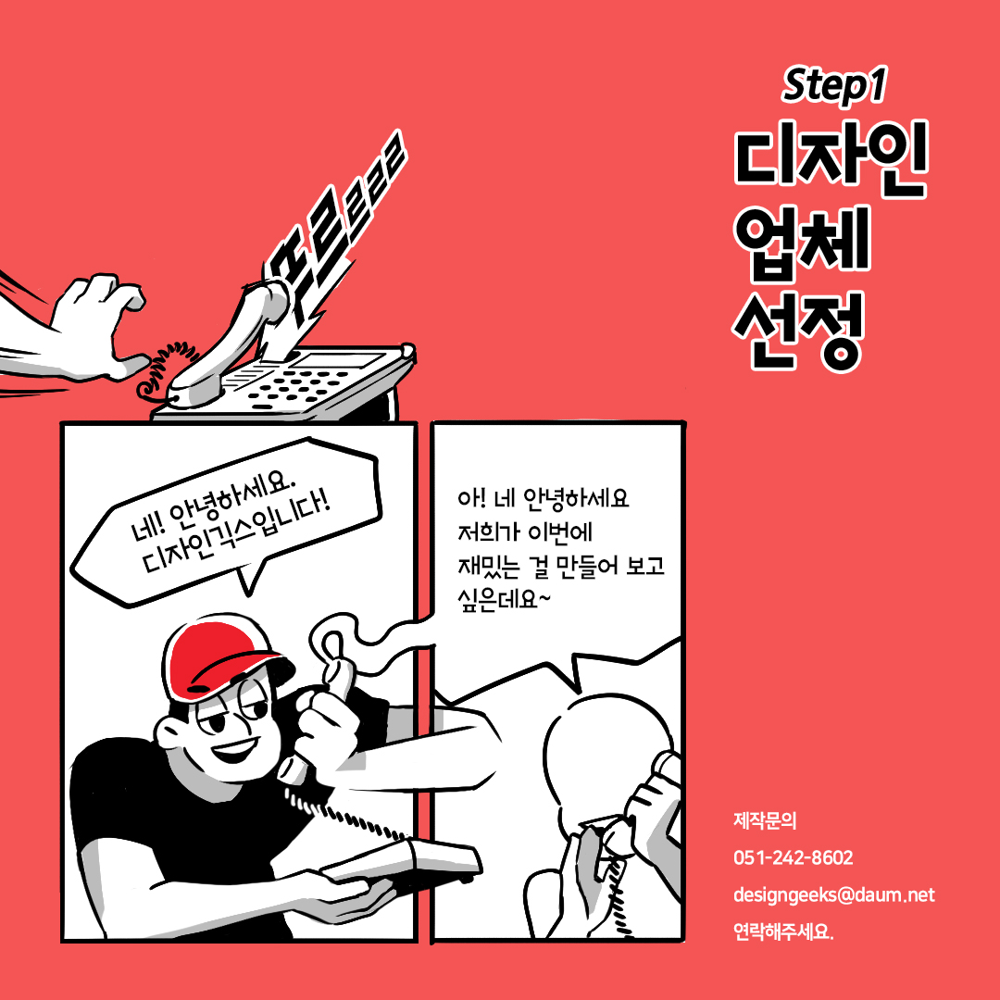
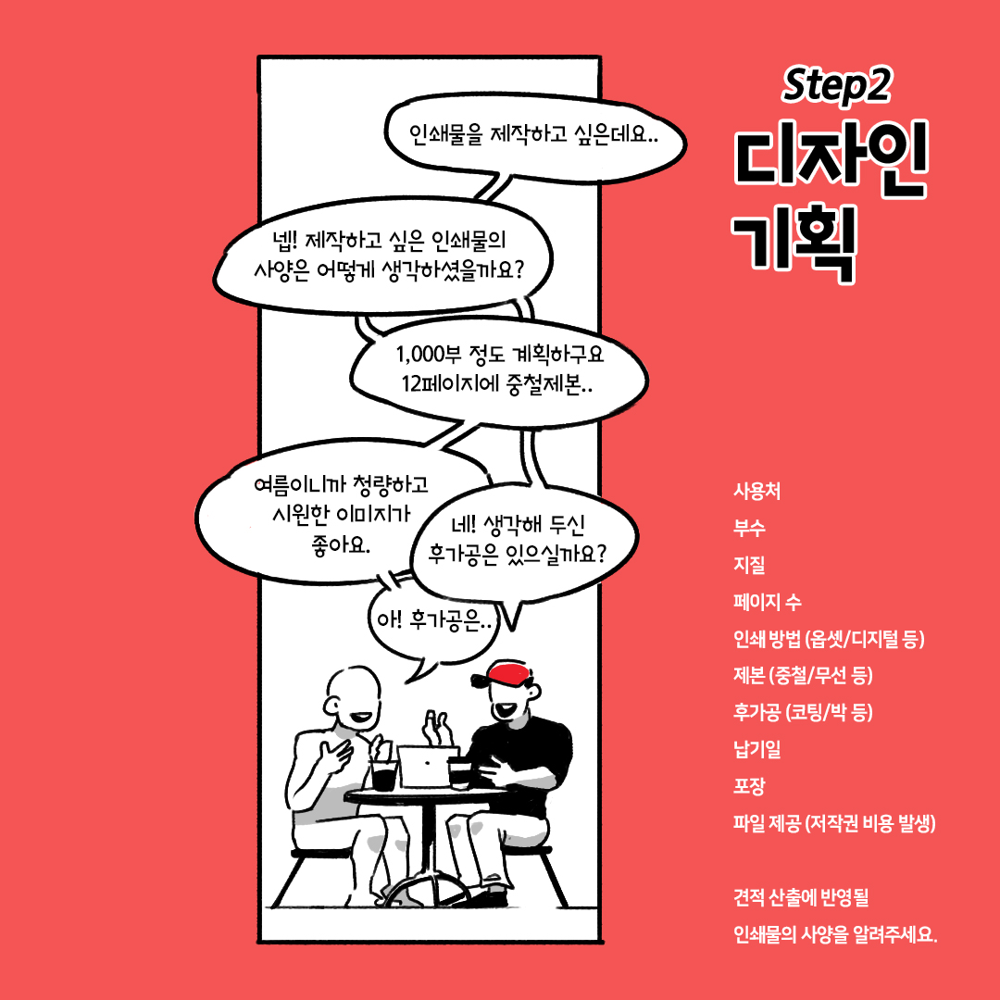
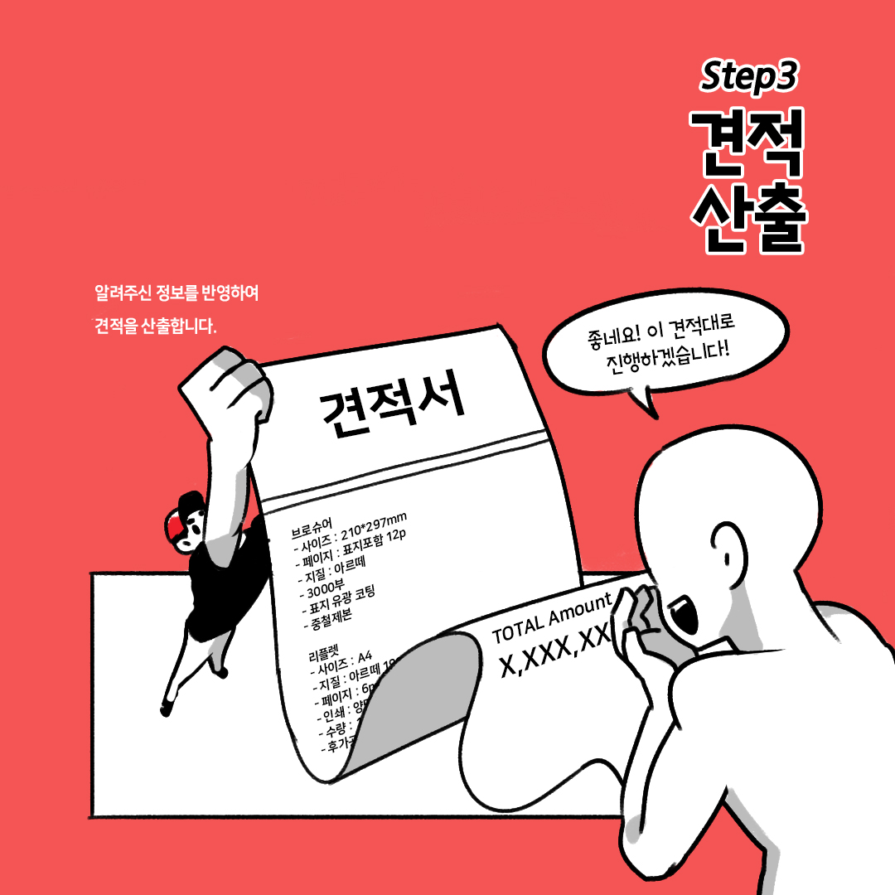
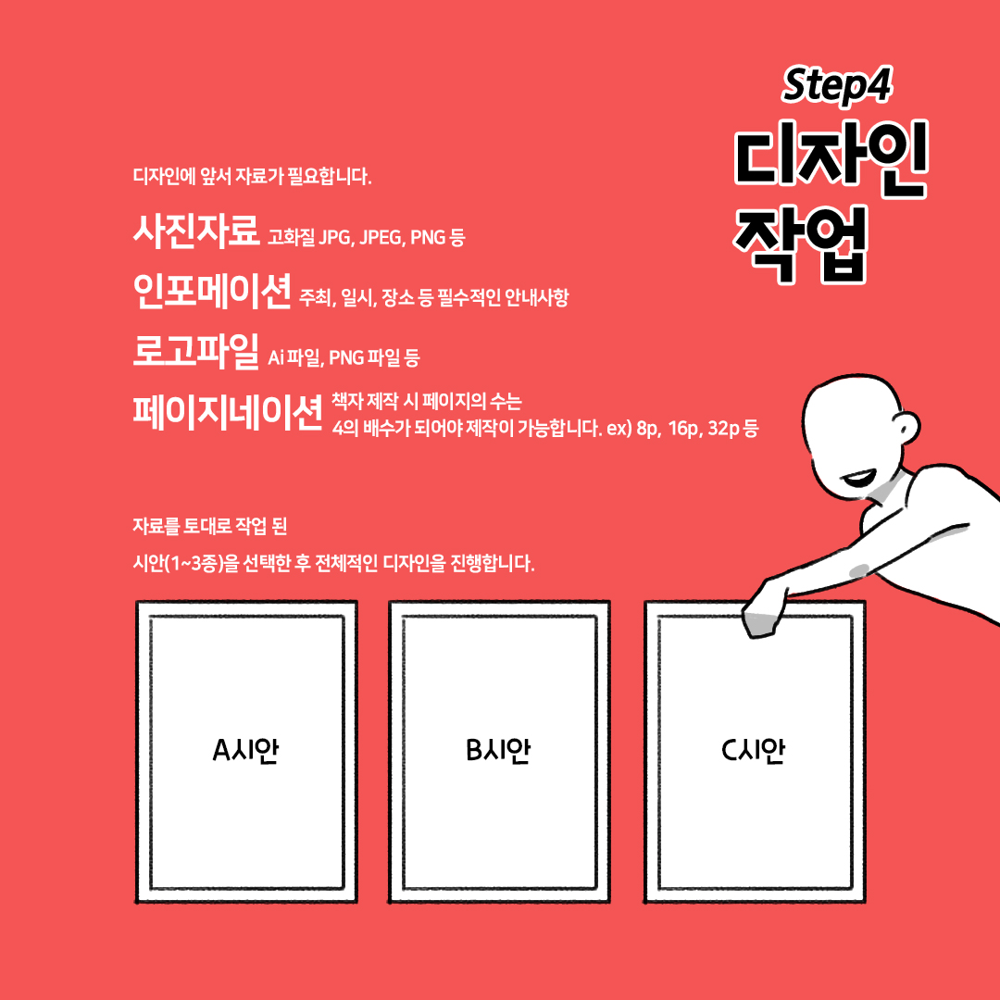
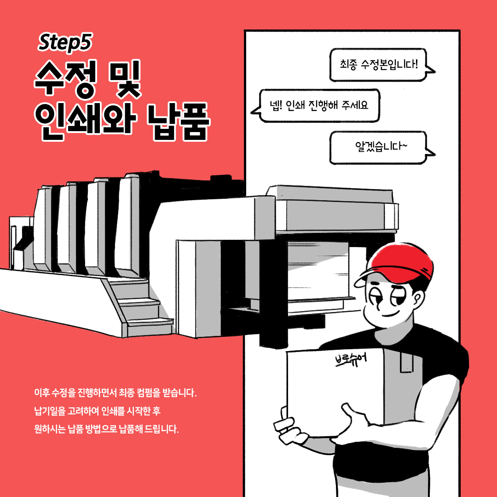

디자인긱스는 2010년에 설립된 디자인 전문 에이전시 회사입니다. 기업, 관공서, 문화예술계 등의 분야에서 홍보물 제작, 디자인, 기획을 아우르고 있습니다. 브로슈어&카탈로그, 포스터, 팜플렛, 책자, CI/BI 등 다양한 디자인 프로젝트를 수행하고 있습니다.
아울러 박물관과 전시관, 기관을 대상으로 교육 컨텐츠 개발 및 체험활동 교구재, 체험 키트를 기획 디자인하여 최종 제작까지 진행하고 있는 기획 디자인 회사입니다.




